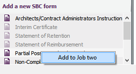
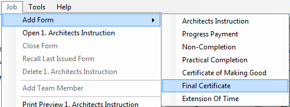
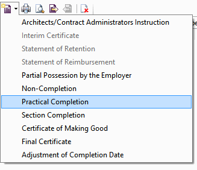

and can be edited.
and can be edited. and will only open in Read-Only format -
they can not be edited again.
and will only open in Read-Only format -
they can not be edited again. are still recallable however
this will only be applicable to the single most recent form issued in any job.
are still recallable however
this will only be applicable to the single most recent form issued in any job.Adding Forms to a Job |
Once the mandatory fields within Job Details have been completed, it is possible to add relevant forms to the active job from the appropriate Form library.
Once the first form is added to a job, certain fields in Job Details (such as the form of contract, retention etc.) are locked and will no longer be possible to edit them.
There are various ways of adding forms to the job:



All forms that are added to an active job will be displayed in the Forms list view in the editor (this will open when the user double-clicks on any desired job).
Forms in the job have three status icons next to them:
and can be edited. and will only open in Read-Only format -
they can not be edited again. are still recallable however
this will only be applicable to the single most recent form issued in any job.See also:
Required Fields in Job Details
Opening an active job
Editing a Form
Creating a new job (online demo)